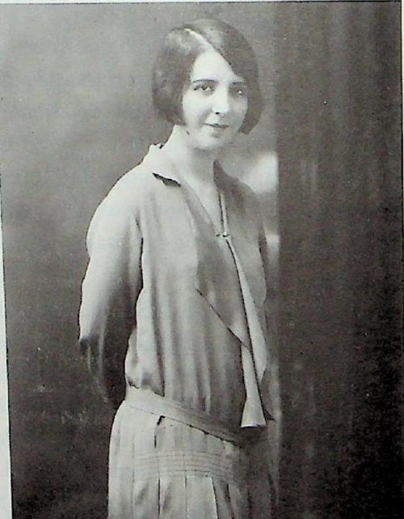

María del Rosario García Narro de López Villarreal
| María del Rosario García Narro de López Villarreal | |
|---|---|
 Retrato | |
| Descripción | Saltillo · obras de beneficencia |
| Fechas / lugar | 1906 – (según libro) |
| Línea familiar | García Narro, García Garza |
María del Rosario García Narro de López Villarreal (1906 – (según libro)) — [Según Durón Jiménez, 1992; sin documento verificado] Hija de José García Rodríguez y María Narro Valdés. Estudió en el Colegio de la Purísima (Saltillo), en el de San José del Verbo Encarnado (Monterrey) y en el de la Santa Cruz (Austin, Texas); tomó dos años de pintura en la academia de Rubén Herrera. Según el libro fue presidenta y fundadora del «Ropero del Pobre» (1945) y del Asilo de Ancianos (1967). Casó el 15-ago-1925 con Roberto López Villarreal; cinco hijas. El «Archivo Rosario García Narro» conserva el original del ensayo de su padre «Descubrimiento de América» (libro p. 105, nota 124).
Contenido
- 1 Vida y cronología (según las fuentes citadas; sin documento verificado)
- 2 Familia (según el libro; sin documento verificado)
- 3 Parentescos según el libro (sin documento verificado), con las fichas de esta galería y del archivo
- 4 Cargos, oficios y obra
- 5 Lo que dice el libro (sin documento verificado)
- 6 Investigación complementaria
- 7 Contradicciones del libro
- 8 Dato en investigación
- 9 Fuentes
- 10 Referencias
Aviso de método. Esta página reúne lo que dice el libro de Martha Durón Jiménez, Orígenes de una fundación (Archivo Municipal de Saltillo, 1992), y otras fuentes secundarias. Nada de ello se da por establecido: las filiaciones, apellidos y fechas se presentan como «según Durón Jiménez, p. X; sin documento verificado». Sólo se tendrá por probado lo que respalde una imagen de documento (acta, protocolo, registro) leída y transcrita; cuando se incorpore, se indicará aquí.
Según Durón Jiménez, Orígenes de una fundación (1992); sin documento verificado: Hija de José García Rodríguez y María Narro Valdés. Estudió en el Colegio de la Purísima (Saltillo), en el de San José del Verbo Encarnado (Monterrey) y en el de la Santa Cruz (Austin, Texas); tomó dos años de pintura en la academia de Rubén Herrera. Según el libro fue presidenta y fundadora del «Ropero del Pobre» (1945) y del Asilo de Ancianos (1967). Casó el 15-ago-1925 con Roberto López Villarreal; cinco hijas. El «Archivo Rosario García Narro» conserva el original del ensayo de su padre «Descubrimiento de América» (libro p. 105, nota 124).
Biografía elaborada a partir del libro de Martha Durón Jiménez, Orígenes de una fundación. Genealogía de don José García Rodríguez, 1530-1992 (Archivo Municipal de Saltillo, 1992), cuyo texto se cita en extracto con su página, y de investigación complementaria con fuentes citadas. Lo que no tiene fuente se marca «dato en investigación»; las contradicciones se señalan sin corregirlas.
Retrato: Retrato de 1938 reproducido en el libro (p. 48). Fuente de la imagen: Durón Jiménez, Orígenes de una fundación, 1992.
- Años (según el libro y fuentes citadas; sin documento verificado): 24-may-1906 – (viva al redactarse el libro, 1992; fecha de muerte: dato en investigación)
- En el libro: pp. 48-49 (texto; retrato p. 48, 1938); árbol p. 54-58; ensayo p. 105 (nota 124)
Vida y cronología (según las fuentes citadas; sin documento verificado)
- 24-may-1906 Nace en Saltillo. (libro p. 48; árbol p. 54-58.)
- s/f Estudia en el Colegio de la Purísima (Saltillo), el Colegio de San José (Verbo Encarnado) en Monterrey y el de la Santa Cruz en Austin, Texas. (libro p. 48.)
- s/f Dos años de clases de pintura en la academia del maestro Rubén Herrera. (libro p. 48.)
- 15-ago-1925 Casa con Roberto López Villarreal (n. 1894, † 1987), hijo de Adelaido López y Adela Villarreal. (libro p. 49; árbol (imagen).)
- 1938 Retrato fotográfico («Rosario García Narro de López Villarreal 1938»). (libro p. 48.)
- 1942 Su retrato pintado por su madre se exhibe en la exposición del 75 aniversario del Ateneo. (libro p. 42 y nota 47.)
- 1945 Funda y preside el Ropero del Pobre (según el libro). (libro p. 49. La obra «El Ropero del Pobre» cumplió 75 años en 2020 (Heraldo de Saltillo, 10-abr-2021): concuerda con 1945; no nombra fundadoras.)
- 1967 Funda y preside el Asilo de Ancianos. (libro p. 49.)
Familia (según el libro; sin documento verificado)
Padres: José García Rodríguez y María Narro Valdés. Esposo: Roberto López Villarreal (n. 1894, † 1987). Hijas (libro p. 49): Rosario (↔ Salomón Abedrop Dávila; hijos Rosario, Roberto Salomón, Margarita, Guadalupe, Patricia, Carlos, Carmela y María), Gloria (↔ Urbano González; hijos Urbano, Gloria Luz, Ana Catalina, Gabriela, María Imelda y Fernando), Mercedes (↔ Bronislaw Mehl; Miguel, Sandra, Janeth), Magdalena (↔ Carlos Pérez Maldonado; Magdalena, María Eugenia, Carlos, Roberto, Lucía y Claudia) y Teresa (↔ Roberto Garza Cabello; Teresa, Roberto, Fernando y Gabriela). Su cuñado político: Guillermo López Villarreal, esposo de su hermana Luz.
Parentescos según el libro (sin documento verificado), con las fichas de esta galería y del archivo
- Padres: Don José García Rodríguez · Doña María Narro Valdés
- Hermanos: José García Narro · María del Carmen García Narro · Antonio García Narro · María de la Luz García Narro · Fernando García Narro · Lic. Dionisio García Narro
Cargos, oficios y obra
Presidenta y fundadora del Ropero del Pobre (1945) y del Asilo de Ancianos (1967), según el libro. Custodia del «Archivo Rosario García Narro» (libro p. 105, nota 124). Propietaria del retrato que su madre le pintó (nota 47).
Lo que dice el libro (sin documento verificado)
Extracto fiel de Durón Jiménez, Orígenes de una fundación, 1992, pp. 48-49 (texto; retrato p. 48, 1938); árbol p. 54-58; ensayo p. 105 (nota 124). Se conserva la ortografía original; [sic] señala un error del original y [n] una llamada de nota.
MARÍA DEL ROSARIO GARCÍA NARRO:
Nació el 24 de mayo de 1906, aquí en Saltillo, realizó sus estudios en el Colegio La Purísima, después, en el Colegio de San José (del Verbo Encarnado), en Monterrey; y, por último, en el Colegio de La Santa Cruz, en Austin, Texas.
Toma clases de pintura, en la Academia del maestro Rubén Herrera, por dos años.
[FOTO – pie de foto]: Rosario García Narro de López Villarreal 1938
Es presidenta y fundadora del Ropero del Pobre, (fundado en 1945) y presidenta y fundadora del Asilo de Ancianos en 1967.
Contrajo matrimonio con don Roberto López Villarreal, hijo de don Adelaido López y doña Adela Villarreal, el 15 de agosto de 1925. Procrearon a: Rosario, Gloria, Mercedes, Magdalena y Teresa López García.
Actualmente vive en la ciudad de Saltillo.
Rosario López García, realiza sus estudios en el Colegio del Sagrado Corazón, contrae matrimonio con Salomón Abedrop Dávila y procrean a: Rosario, Roberto Salomón, Margarita, Guadalupe, Patricia, Carlos, Carmela y María Abedrop López.
Gloria López García, realiza sus estudios en el Sagrado Corazón, contrae matrimonio con Urbano González y procrean a: Urbano, Gloria Luz, Ana Catalina, Gabriela, María Imelda y Fernando González López.
Mercedes López García, realiza estudios en el Colegio del Sagrado Corazón y contrae matrimonio con Bronislaw Mehl y procrean a: Miguel, Sandra y Janeth Mehl López.
Magdalena López García, realiza estudios en el Colegio del Sagrado Corazón, contrae matrimonio con Carlos Pérez Maldonado y procrean a: Magdalena, María Eugenia, Carlos, Roberto, Lucía y Claudia Pérez Maldonado López.
Teresa López García, realiza estudios en el Colegio del Sagrado Corazón, contrae
matrimonio con Roberto Garza Cabello y procrean a: Teresa, Roberto, Fernando y Gabriela
Garza López.
Investigación complementaria
- Ropero del Pobre. El Heraldo de Saltillo (10-abr-2021) informa que la directora de «El Ropero del Pobre», Paulina Udave Valdés, dice que «El año pasado se cumplieron 75 años de que se inició la obra», hoy asilo de ancianos de 97 residentes, en la calle Hidalgo sur desde hace medio siglo. La fecha (1945) coincide con el libro; la fuente no atribuye la fundación a doña Rosario: dato en investigación. (Un resumen de búsqueda del 28-oct-2026 tampoco la encontró; ver https://www.oscscoahuila.mx/asistencia-y-ropero-del-pobre-ac, no abierta.)
- Archivo. La nota 124 del ensayo «Descubrimiento de América» (libro p. 105) dice: «Documento original pertenece al Archivo Rosario García Narro».
- La búsqueda de otras fuentes no halló semblanzas independientes.
Contradicciones del libro
Se registran sin corregir.
- Asilo de Ancianos (1967) y Ropero del Pobre (1945): el Heraldo indica que la institución es una sola («asilo de ancianos «El Ropero del Pobre»») que antes atendió adicciones y repartió alimentos; el libro habla de dos fundaciones (Ropero 1945 y Asilo 1967). Es compatible (la obra pudo pasar a asilo de ancianos), pero no está documentado que doña Rosario haya sido la fundadora.
- Fecha del matrimonio: texto p. 49 y árbol: 15-ago-1925 (sin diferencia).
Dato en investigación
- Fecha y lugar de defunción: dato en investigación.
- Fundación de la Asociación Ropero del Pobre (acta constitutiva, fundadoras): consultar la asociación o el AMS.
- Fotografías de 1938: usar con nota «retrato de 1938, libro p. 48».
Fuentes
- Martha Durón Jiménez, Orígenes de una fundación. Genealogía de don José García Rodríguez 1530-1992, Archivo Municipal de Saltillo, 1.ª ed., diciembre de 1992, 146 pp..
- El Heraldo de Saltillo, «Tras año complejo, optimismo en asilo al iniciar vacunación», 10-abr-2021: https://elheraldodesaltillo.mx/2021/04/10/tras-ano-complejo-optimismo-en-asilo-al-iniciar-vacunacion/ (la directora Paulina Udave Valdés dice que en 2020 se cumplieron 75 años de la obra de «El Ropero del Pobre»; no nombra fundadoras).
Referencias
- «María del Rosario García Narro de López Villarreal», Genealogía Sefardí — investigación Sefarad-MX, genealogiasefardi.site/biografias/maria-del-rosario-garcia-narro.